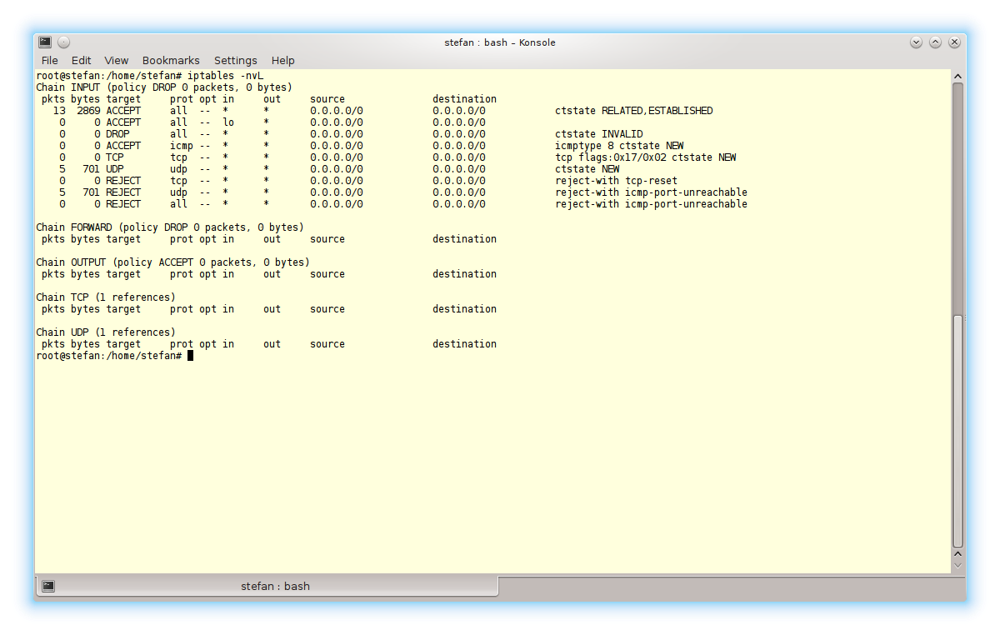

Mit Firewalls kann man den Datentraffic in einem Netzwerk beobachten und kontrollieren. Die Standrd-Firewall-Lösung unter Linux heißt "netfilter", welche seit Kernel-Version 2.4 in Linux integriert ist. Eine weitere Software namens "iptables" wird häufig dazu verwendet, um netfilter zu konfigurieren.
Mit iptables lassen sich Regeln (rules), Ketten (chains) und Tabellen (tables) für die Firewallkonfiguration erstellen. Regeln sind die Glieder einer Kette. Tabellen enthalten Ketten.
Durch Regeln lässt sich bei jedem eintreffenden Paket entscheiden, wie weiter mit ihm verfahren wird. Das eintreffende Paket wird auf bestimmte Parameter überprüft, und bei Übereinstimmung der Parameter mit den Vorgaben der Regel wird eine Aktion ausgeführt. Falls es zu keiner Übereinstimmung kommt wird die policy der Kette angewendet.
Man unterscheidet folgende Regeln:
- ACCEPT
- Erlaubt das Routing des Paketes.
- DROP
- Das Routen des Paketes wird abgelehnt. Weiter passiert nichts, der Sender weiß also nicht, was mit seinem Paket passiert.
- REJECT
- Das Routen des Paketes wird abgelehnt, der Sender erhält aber eine Error-Meldung.
- QUEUE
- Die Pakete werden für andere Paket-Filter-Anwendungen gesammelt.
- RETURN
- Das Durchlaufen der aktuellen Kette wird abgebrochen. Falls eine "Vater"-Kette durchlaufen wird, wird an der Stelle weitergemacht, an der die "Kind"-Kette anfing.
Mehrere Regeln bilden eine Kette. Das Paket durchläuft alle Regeln der Kette nacheinander. Sobald eine Regel erfüllt ist, ergo ihre Parameter mit der des Paketes übereinstimmen, wird die Bearbeitung der Kette abgebrochen bzw. beendet.
Tabellen bestehen aus verschiedenen Ketten. Man unterscheidet die Tabellen
- filter
- Die Standard-Tabelle. Sie beinhaltet die Ketten INPUT (für eingehende, an diesen Rechner addressierten Pakete), FORWARD (für Pakete, die durch diesen Rechner geroutet werden) und OUPUT (für Pakete, die an diesem Rechner erstellt wurden).
- nat
- Wird aufgerufen, wenn ein Paket eine TCP-Verbindung aufbauen will. Sie enthält die Ketten PREROUTING (für abgeänderte Pakete direkt beim eintreffen), POSTROUTING (für abgeänderte Pakete unmittelbar bevor sie den Rechner verlassen) und OUTPUT (für Pakete, die an diesem Rechner erstellt wurden und ihn verlassen). Abgeändert heißt hier, dass sie übersetzt wurden. NAT-Tabellen verändern, je nach Typ, die Eingans- bzw Ausgangsadresse.
- mangle
- Mangle wird für spezielle Paket-Umschreibung benutzt. Die Ketten PREROUTING (für eintreffende, abgeänderte Pakete vor dem Routing-Vorgang), OUTPUT (für Pakete, die auf diesem Rechner erstellt wurden, ebenfalls vor dem Routing-Vorgang), INPUT (für Pakete, die geroutet werden, bevor sie an den Prozess gesendet werden), FORWARD (für Pakete, die nach der initialen Routing-Entscheidung, aber vor der unmittelbar letzten "gemangelt" werden) und POSTROUTING (für abgeänderte Pakete, die den Rechner gerade verlassen) sind in ihr enthalten.
- raw
- Wird für Ausnahmeregelungen vom Verbindungs-Tracking in Kombination mit dem NOTRACK-Ziel benutzt. Hat die höchse Priorität, womit es vor allen anderen Tabellen aufgerufen wird. Sie beinhaltet die Ketten PREROUTING (für alle ankommenden Pakete, unabhängig vom verwendetet Netzwerk-Interface) und OUTPUT (für Pakete, die auf dem Rechner erstellt wurden).
- security
- Wird für MAC-Netzwerk-Regeln gebraucht und nach der filter-Tabelle aufgerufen. Sie beinhaltet die Ketten INPUT (für Pakete, die an die Box addressiert sind), OUTPUT (für abgeänderte Pakete, die an diesem Rechner erstellt wurden und noch nicht geroutet wurden) und FORWARD (für abgeänderte Pakete, die durch die Box geroutet werden)
Mit dem Befehl
sudo iptables -nvL
können die aktuellen regeln der Default-Tabelle eingesehen werden.

Abb. 1: Keine Regeln in der Standardkonfiguration
b)
Die policy der FORWARD-Kette soll Pakete durchlassen. Dies geschieht mit
# sudo iptables -P FORWARD DROP
Die ausgehende Kommunikation soll nicht behindert werden, daher stellen wir die OUTPUT-policy auf ACCEPT.
# sudo iptables -P OUPUT ACCEPT
Die policy der INPUT-Kette soll, um umgsp. auf Nummer sicher zu gehen, Pakete verwerfen, da sie i.d.R. schon durch eine vorgehende Regel behandelt sein sollten.
# sudo iptables -P INPUT DROP
Die erste Regel der INPUT-Kette behandelt das loopback-interface, welches für die korrekte Funktionsweise einiger Daemons und Anwendungen benötigt wird.
# sudo iptables -A INPUT -i lo -j ACCEPT
Die Zweite lässt für das ICMP-Protokoll wichtige Funktionen zu wie bspw. die TCP-Staukontrolle und das managen von MTUs.
# sudo iptables -A INPUT -m conntrack --ctstate
RELATED,ESTABLISHED -j ACCEPT
Die dritte Regel verwirft alle Pakete, dessen Addressen fehlerhaft sind, ergo bspw. ein falscher Header oder eine falsche Prüfsumme besitzen.
# sudo iptables -A INPUT -m conntrack --ctstate INVALID
-j DROP
Durch Anwendung dieser Regel wird die Firewall erst zu einer zustands-orienterten.
Die nächste und vierte Regel lässt pings, auch bekannt als ICMP-Echos, zu. Diese werden benutzt, um zu überprüfen, ob ein Rechner erreichbar ist.
# sudo iptables -A INPUT -p icmp --icmp-type 8 -m
conntrack --ctstate NEW -j ACCEPT
Nun kommen die anfangs erstellten, benutzer-definierten Ketten zur Verwaltung von TCP- und UDP-Kommunikation zu Trage.
Da TCP-Verbindungen vor der Kommunikation aufgebaut werden, sollen SYN-Pakete angenommen werden. UDP-Verbindungen sollen direkt angenommen werden.
TCP:
# sudo iptables -A INPUT -p tcp --syn -m conntrack
--ctstate NEW -j TCP
UDP:
# sudo iptables -A INPUT -p udp -m conntrack --ctstate
NEW -j UDP
Falls der entsprechende Port geschlossen ist, soll bei TCP ein TCP-RESET-Paket an den Sender gesendet werden. Bei UDP wird dem Sender ein ICMP-port-unreachable-Paket zugesandt.
TCP:
# sudo iptables -A INPUT -p tcp -j REJECT --reject-with
tcp-reset
UDP:
# sudo iptables -A INPUT -p udp -j REJECT --reject-with
icmp-port-unreachable
Als neunte und letzte Regel soll jedes Paket, dass bis jetzt noch nicht behandelt wurde, abgelehnt werden.
# sudo iptables -A INPUT -j REJECT --reject-with
icmp-proto-unreachable
Die so eben beschriebene Firewall sieht nun so aus:

Abb. 2: Einfache Konfiguration
Quelle 1 für iptables Regeln
Quelle 2 für iptables Recherche
Quelle 3 für iptables Recherche
Quelle 4 für Erläuterung von Tabellen
Quelle 5 für Erläuterung von RETURN-Regel
Quelle 6 für Erläuterung von ping